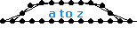
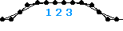
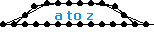
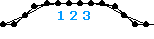

|
001-020
|
|
021-040
|
|
041-060
|
|
061-080
|
|
081-100
|
|
101-120
|
|
121-140
|
|
141-160
|
|
161-180
|
|
181-200
|
|
201-220
|
| 221 |
 |
name: Peaucellier_Linkage
genre: other
comments: Peaucellier was a French military officer who solved the age-old dilemma of how to construct and anchored, purely geometric linkage that could draw a mathematically straight line. I worked very hard to make sure that the concept is portrayed flawlessly here. |
| 222 |
 |
name: Peaucellier_Transport
genre: walker
comments: I didn't expect to be able to implement the Peaucellier linkage in a working model when I built it. However, as with most cases, working with something eventually revealed its secrets to me. It was a surprising hit and many other constructors found wonderful uses for the linkage in their own models. |
| 223 |
 |
name: Seafaring
genre: walker
comments: This is a relatively straightforward modification of the original daintywalker. Two things to note are that the leg extensions work in the opposite direction as the legs and that I always construct a new dainty walker from scratch when I make a tribute model. |
| 224 |
 |
name: Q_Type
genre: walker/motored
comments: During a time of very low activity qwerty posted a very nice model that used simple triangle to create virtual linear motors from a regular compound linear motor. The design was ingenious and tons of people submitted models to the zoo in that style. I named it Q_Type in recognition. |
| 225 |
 |
name: Inside_the_Box
genre: walker/motored
comments: One time a new constructor posted that he thought we were all thinking inside the box and we should try harder to make original things. I felt that such a comment could only come from someone not yet familiar with the task of constructing so I named this model to indicate the advantages of building on the past. |
| 226 |
 |
name: Danube
genre: walker/motored
comments: The Danube is a river that frequents the imagery of the German poet Hoelderlin. The name has no particular significance other than the fact that I really wanted to incorporate the impact Hoelderlin's thought has had on my own in a model. |
| 227 |
 |
name: Palimpsest
genre: walker/motored
comments: This name refers to a very old manuscript that has been scraped and overwritten. I thought that the flat top of this model combined with the low-slung way it traverses the ground recalls this interesting word. |
| 228 |
 |
name: Exegesis
genre: walker/motored
comments: Exegesis is a word having to do with interpreting text so the name is meant to indicate that the model revisits the structure of Palimpsest in a new way. It also is one of many walkers that I think are two tall for aesthetic and mechanical reasons. |
| 229 |
 |
name: Plate_Tectonics
genre: walker/motored
comments: Along with Palimpsest and Exegesis, Plate_Techtonics introduced a new type of compound linear motor I call the MultiMotor. It's basically just a regular compound motor with the corresponding masses zipped together to form 1 or more additional motors. It looked like a mountain range so I named it after continental drift. |
| 230 |
 |
name: Anaxagoras
genre: walker/motored
comments: Anaxagoras is another presocratic philosopher. The model uses my Angle_Ellipse_Box_Motors joined by exact tension springs. I decided to use only half of the available power points because I thought it would have an unseal look to it. |
| 231 |
 |
name: Dachshund
genre: walker/motored
comments: This model uses a combination of technologies to achieve its low-slung appearance. I internationally made it very long to prevent it from tipping as it walked. Playing with wave amplitude will change the dimensions and stride in interesting ways. |
| 232 |
 |
name: Polis
genre: walker/motored
comments: Named after the Greek word for a city, Polis uses compound motors and actuators just like Dachshund to propel itself forward. Notice that the vertically oscillating masses connected to the lower structure do not need to be there. I could have used a different kind of actuator to eliminate them. |
| 233 |
 |
name: Duck_Walk
genre: walker/motored
comments: This model uses a combination of my MultiMotor method and a novel idea by a constructor named the_duck. He came up with the idea of using the zip spring structure called a Pandora as expandable legs. I believe that Pandoras were originally created by Qwerty. |
| 234 |
 |
name: The_Maltese_Falcon
genre: walker/motored
comments: This model, named after the classic Film Noir, is very similar to my Inside_the_Box and Danube models. I didn't set out that make a model that looked like anything in particular but as the shape emerged I felt it might be appropriate to steer it in that direction. |
| 235 |
 |
name: Tmesis
genre: roller
comments: Tmesis comes from a Greek word that refers to a specific grammatical or rhetorical device. Basically it uses two boxed Rotation Angle Motors linked by a tension spring. It actually has a difficult time rolling forward because of the square wheels but it's that a little tuning can't conquer. |
| 236 |
 |
name: Predator_and_Prey
genre: walker
comments: I don't remember exactly how this model became two models. But I think it's funny that although I intended it to be obvious which one was the predator and which was the prey, they actually take turns chasing each other. |
| 237 |
 |
name: Empedocles
genre: walker/motored
comments: If you know the story of Empedocles, you'll know what I mean when I say that this model originally reminded me of a volcano. I love those robots that scientists use to explore volcanic craters and this model looks like it could carry a payload of instruments into those harsh environments. |
| 238 |
 |
name: Chiron
genre: walker/motored
comments: I wasn't sure what to think of this model when it was first made. I actually had several different versions going at once and there was no clear winner. This version has really grown on me since, however. It is named for the wise centaur who tutored Achilles and Hercules. |
| 239 |
 |
name: Invisible_RAM
genre: walker
comments: This model originally consisted of two 1pt Rotation Angle Motors joined by the power points in the center of their tension springs. But the actuators unexpectedly lined up perfectly so I rebuilt so they shared the end points in common and deleted the tension springs entirely. |
| 240 |
 |
name: Tick_Tock
genre: zero-g
comments: Tick_Tock developed from a method I discovered to capture bent flex shapes. The odd reciprocating action is brought about inertially. You can get a better idea of how it works if you tag one of the flex masses with a spring and watch how it moves in a strangely elliptical pattern. |
|
241-260
|
|
261-280
|
|
281-300
|
|
301-320
|
|
321-340
|


 
